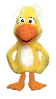
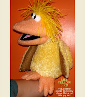

Just ducky
6/2/2009
Question: I am a 74 year old retiree who's greatest joy in life is making people laugh. I have had some stage and radio experience and had been thinking of ventriloquism for many years. I discovered your Maher Course by way of the Vent Haven website, for which I am very grateful. I do wonder if you could suggest someone who makes the soft figure of the duck similar to the one used by Mark Wade. I would like that to be my first figure, with a couple other figures to follow, as I improve. Many thanks for this fine program. Don
* * * * *
Answer: Mark's duck was custom made for him, so you wouldn't want an exact duplicate. But there are similar puppet characters available and some very nice ones. Here are a couple you could check out. The duck at left is sold by One Way Street
* * * * *
{kind=link}

*Answer: Mark's duck was custom made for him, so you wouldn't want an exact duplicate. But there are similar puppet characters available and some very nice ones. Here are a couple you could check out. The duck at left is sold by One Way Street
{kind=link}

And the one at right is sold by Puppet Planet
Both appear to be very fun characters. Along with their appearance, compare the size, price, and delivery times when making your decision.
Both appear to be very fun characters. Along with their appearance, compare the size, price, and delivery times when making your decision.